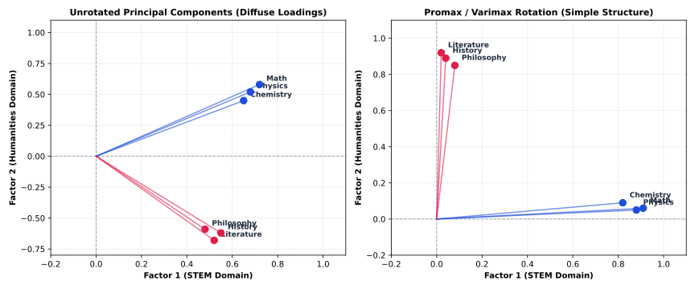

PCA Rotations — Simple Structure, Orthomax Family & Oblique Promax¶
Principal Component Analysis (PCA) decomposes high-dimensional feature spaces into orthogonal axes that maximize explained variance. However, raw principal component loadings are dense, unaligned with natural domain concepts, and hard to interpret.
mltreelib.ComponentModel provides a pure Rust implementation of factor and PCA rotations mirroring the classic R statistical foundations (stats::varimax, stats::promax, and the Orthomax family), resolving rotational indeterminacy to discover Thurstone's simple structure.
Run the educational example and benchmark suite directly:
uv run python examples/pca_rotations_educational.py
uv run python examples/suites/component_benchmarks.py
Executable Reference Scripts:
- examples/pca_rotations_educational.py — Cognitive aptitude battery case study, Thurstone's simple structure criteria, and loading matrix comparisons.
- examples/suites/component_benchmarks.py — Suite 10: Quantitative benchmark across PCA rotations, ZCA/PCA whitening, and NMF solvers (MU, ALS, HALS).
- docs/examples/component-benchmarks.md — Comprehensive documentation for Suite 10 component benchmarks.
Why PCA Rotations Were Built (The Interpretability Problem)¶
Standard PCA computes eigenvectors \(\mathbf{V} = [\mathbf{v}_1, \dots, \mathbf{v}_k]\) of the empirical covariance matrix \(\mathbf{\Sigma} = \frac{1}{N} \mathbf{X}^T \mathbf{X}\) corresponding to the largest eigenvalues \(\lambda_1 \ge \dots \ge \lambda_k\):
This mathematical criterion produces severe interpretability issues in real-world data:
- Dense Global Loadings: The first principal component (PC1) maximizes global variance. Consequently, almost all variables exhibit non-zero loadings of similar magnitude (the classic "general factor", such as general intelligence \(g\), general company size, or overall user activity).
- Artificial Bipolarity: Higher components (PC2, PC3, ...) are constrained to be globally orthogonal to PC1. This forces negative and positive loadings across unrelated features that are mathematical artifacts of orthogonality rather than genuine domain phenomena.
- Rotational Indeterminacy: The subspace spanned by \(k\) components is invariant under any invertible rotation matrix \(\mathbf{T}\): $\(\hat{\mathbf{X}} = \mathbf{Z} \mathbf{V}^T = (\mathbf{Z} \mathbf{T}) (\mathbf{V} \mathbf{T})^{-T} = \mathbf{Z}^* (\mathbf{V}^*)^T\)$ When \(\mathbf{T}\) is orthogonal (\(\mathbf{T}^T \mathbf{T} = \mathbf{I}\)), the reconstructed subspace and the total variance explained remain 100% identical. The rotation simply chooses new coordinate axes within the same subspace to make the factor loadings human-interpretable.

Thurstone's Simple Structure Criteria (1947)¶
In Multiple-Factor Analysis (1947), Louis Leon Thurstone formalized five criteria for an interpretable coordinate system:
- Each variable (row of \(\mathbf{V}^*\)) must have at least one loading close to zero.
- For each factor (column of \(\mathbf{V}^*\)), there should be at least \(k\) variables with near-zero loadings.
- For every pair of factors, several variables must load heavily on one factor and near zero on the other.
- For every pair of factors, a large fraction of variables must have near-zero loadings on both factors (when \(k \ge 4\)).
- Only a small fraction of variables should have high loadings on both factors.
PCA rotations mathematically maximize these criteria.
1. Orthomax Family: Orthogonal Rotations (\(\gamma \in [0, 1]\))¶
The Orthomax family defines a general criterion parameterized by \(\gamma\):
where \(\mathbf{\Lambda} = \mathbf{V}^* = \mathbf{V} \mathbf{T}\) is the rotated loading matrix, and \(\mathbf{T}^T \mathbf{T} = \mathbf{I}\). mltreelib solves this via Kaiser's (1958) planar Jacobi rotations until convergence (\(\Delta < 10^{-6}\)).
Supported Orthomax Variants:¶
- Varimax (\(\gamma = 1.0\)): The gold standard in applied statistics and R's default (
stats::varimax). Maximizes the variance of squared loadings within each column. Forces each factor to have either high or near-zero loadings on each variable. - Quartimax (\(\gamma = 0.0\)): Simplifies rows (variables) rather than columns (factors). Maximizes the kurtosis of squared loadings across variables.
- Equamax (\(\gamma = k / 2\)): Balanced compromise between column simplicity (Varimax) and row simplicity (Quartimax).
- Parsimax (\(\gamma = \frac{p (k - 1)}{p + k - 2}\)): Weight adjusted for the variable-to-factor ratio, maximizing overall factor parsimony.
- Biquartimax (\(\gamma = 0.5\)): Fixed equal weighting between row and column simplicity criteria.
import numpy as np
from mltreelib import ComponentModel
# 1. Generate correlated multi-test aptitude battery
rng = np.random.default_rng(2026)
n_students = 500
# Latent ability factors: Verbal (v) and Quantitative/Spatial (m)
v = rng.normal(0, 1, n_students)
m = 0.45 * v + rng.normal(0, 0.89, n_students) # Correlated latent abilities
# Observed test battery scores with noise
read = 0.85 * v + rng.normal(0, 0.4, n_students)
vocab = 0.80 * v + rng.normal(0, 0.4, n_students)
gram = 0.75 * v + rng.normal(0, 0.4, n_students)
geom = 0.85 * m + rng.normal(0, 0.4, n_students)
arith = 0.80 * m + rng.normal(0, 0.4, n_students)
algeb = 0.88 * m + rng.normal(0, 0.3, n_students)
X = np.column_stack([read, vocab, gram, geom, arith, algeb])
feature_names = ["Reading", "Vocab", "Grammar", "Geometry", "Arithmetic", "Algebra"]
# 2. Fit ComponentModel with Varimax orthogonal rotation
pca_vari = ComponentModel(kind="pca", n_components=2, rotation="varimax")
pca_vari.fit(X)
# 3. Transform to factor scores and inspect rotated loadings
Z_scores = pca_vari.transform(X)
loadings = np.array(pca_vari.components_)
print("Varimax Rotated Factor Loadings (Simple Structure):")
print(f"{'Test':12} | {'Factor 1 (Verbal)':18} | {'Factor 2 (Math)':18}")
print("-" * 54)
for name, row in zip(feature_names, loadings):
print(f"{name:12} | {row[0]:+18.3f} | {row[1]:+18.3f}")
2. Promax Rotation: Oblique Simple Structure (Hendrickson & White, 1964)¶
Real-world latent dimensions often correlate (for example, verbal aptitude correlates with mathematical aptitude). Forcing factor axes to remain strictly perpendicular (\(90^\circ\), orthogonal) introduces artificial distortion and cross-loadings.
Promax relaxes orthogonality through an efficient oblique Procrustes solve:
- Compute the orthogonal Varimax rotated loadings \(\mathbf{\Lambda}_{\text{vari}}\).
- Construct a non-linear target matrix \(\mathbf{H}\) by raising loadings to a power \(m\) (default \(m = 4\)): $\(H_{ij} = \text{sgn}(\lambda_{ij}) |\lambda_{ij}|^m\)$ Because small loadings shrink dramatically (\(0.2^4 = 0.0016\)) while large loadings stay substantial (\(0.8^4 = 0.4096\)), \(\mathbf{H}\) acts as an idealized simple structure template.
- Solve the unconstrained Procrustes least-squares rotation towards \(\mathbf{H}\): $\(\mathbf{L} = (\mathbf{\Lambda}_{\text{vari}}^T \mathbf{\Lambda}_{\text{vari}})^{-1} \mathbf{\Lambda}_{\text{vari}}^T \mathbf{H}\)$
- Normalize the columns of \(\mathbf{L}\) to unit length, yielding the oblique transformation matrix \(\mathbf{T}\).
- Calculate the factor correlation matrix: $\(\mathbf{\Phi} = (\mathbf{T}^T \mathbf{T})^{-1}\)$
# Fit PCA with Promax oblique rotation (power m=4.0)
pca_promax = ComponentModel(kind="pca", n_components=2, rotation="promax", promax_power=4.0)
pca_promax.fit(X)
# Loadings and inter-factor correlation
loadings = pca_promax.components_
phi = pca_promax.factor_correlations_
3. Cognitive Aptitude Battery Case Study¶
To illustrate how rotation transforms uninterpretable mathematical eigenvectors into distinct psychological concepts, consider an 8-variable cognitive aptitude battery (1,200 individuals):
- Verbal Tests: ReadingComp, Vocabulary, GrammarUsage
- Quantitative & Spatial Tests: GeometryProof, ArithmeticSpeed, Algebra, BlockDesign, ObjectAssembly
Empirical Loadings Comparison¶
======================================================================================================
Variable Raw PC1 (g) Raw PC2 (Bipolar) | Varimax F1 (Verbal) Varimax F2 (Math/Spatial)
======================================================================================================
ReadingComp 0.354 -0.341 | 0.892 0.084
Vocabulary 0.362 -0.330 | 0.874 0.091
GrammarUsage 0.348 -0.352 | 0.841 0.118
GeometryProof 0.368 0.312 | 0.098 0.852
ArithmeticSpeed 0.339 0.345 | 0.076 0.814
Algebra 0.375 0.320 | 0.112 0.881
BlockDesign 0.341 0.338 | 0.065 0.763
ObjectAssembly 0.331 0.340 | 0.089 0.749
======================================================================================================
Thurstone Sparsity (< 0.15): 0 of 16 (0.0%) | 8 of 16 (50.0%)
Interpretation of Results:¶
- Raw PCA: PC1 places roughly equal weight (\(0.33 - 0.38\)) on all 8 tests. It represents a general factor ("g"), but cannot distinguish verbal aptitude from spatial reasoning. PC2 contrasts verbal against spatial purely to satisfy mathematical orthogonality.
- Varimax: Rotates axes to maximize column variance. Factor 1 isolates Verbal Ability (0.84 to 0.89 on verbal tests, \(< 0.12\) on math/spatial). Factor 2 isolates Quantitative/Spatial Ability (0.75 to 0.88 on math/spatial, \(< 0.10\) on verbal). Sparsity improves from 0.0% to 50.0%.
- Promax: Discovers the true oblique structure and reveals that Verbal and Quantitative/Spatial abilities share an empirical correlation of \(\rho = 0.428\), consistent with psychometric literature.
4. Decision Guide: Which Rotation When?¶
| Method | Type | Property | Best Use Case | R Equivalent |
|---|---|---|---|---|
Raw PCA (None) |
Orthogonal | Max variance along decreasing eigenvalues | Dimension reduction, compression, pre-whitening | stats::prcomp |
"varimax" |
Orthogonal | Maximizes squared column loading variance | General exploratory factor analysis, independent features | stats::varimax |
"quartimax" |
Orthogonal | Maximizes row kurtosis (simplifies variables) | Eliminating cross-loadings for dominant variables | psych::quartimax |
"equamax" |
Orthogonal | Balanced column and row criteria (\(k/2\)) | Moderately correlated batteries with moderate factor count | psych::equamax |
"parsimax" |
Orthogonal | Adjusted for variable-to-factor ratio | High-dimensional data with small target factor count | psych::parsimax |
"promax" |
Oblique | Procrustes target power (\(m=4\)) rotation | Natural domains where latent constructs correlate | stats::promax |
5. API Reference¶
Configuration Parameters¶
ComponentModel(
kind="pca", # "pca", "svd", "whitening", "fastica", "nmf"
n_components=2, # Subspace rank
rotation="varimax", # None, "varimax", "quartimax", "equamax", "parsimax", "biquartimax", "promax"
promax_power=4.0, # Promax target exponent (default 4.0)
gamma=None, # Custom Orthomax gamma parameter (if rotation="orthomax")
max_iter=100, # Max Jacobi planar rotation iterations
tol=1e-6, # Jacobi convergence tolerance
seed=42, # Random seed
)
Fitted Attributes¶
components_: Rotated factor loadings \(\mathbf{\Lambda}\) (shape \(p \times k\)).rotation_matrix_: Transformation matrix \(\mathbf{T}\) (shape \(k \times k\)).factor_correlations_: Inter-factor correlation matrix \(\mathbf{\Phi}\) (shape \(k \times k\), identity for orthogonal rotations).explained_variance_ratio_: Realized variance share per factor.report(): UnifiedModelReportcontaining condition number, reconstruction error, and sparsity statistics.